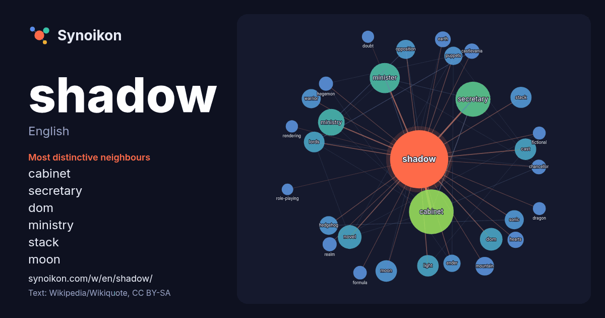

English · word of the day list
shadow
The words found around it in 1712 instances from English Wikipedia, Wikiquote and Hacker News.

Most distinctive neighbours
- cabinet 92×
- secretary 43×
- dom 31×
- ministry 27×
- stack 26×
- moon 23×
- minister 22×
- sonic 22×
- hedgehog 22×
- puppets 20×
- ender 19×
- warrior 19×
- cast 18×
- novel 17×
- opposition 16×
- hearts 16×
- lords 15×
- castlevania 15×
- light 14×
- hegemon 13×
× = how many times more often than in general English Wikipedia text.
Most frequent neighbours
- cabinet 121
- secretary 74
- minister 55
- state 53
- game 46
- ministry 43
- film 39
- album 35
- american 34
- novel 34
- series 33
- dom 31
- cast 28
- light 28
- moon 28
- stack 27
- lords 26
- opposition 22
- sonic 22
- warrior 22
In context
- A shadow is a dark area on a surface where light from a light source is blocked by an object. In contrast, shade occupies the three-dimensional volume Wikipedia snippets · Shadow
- The Shadow is a fictional character created by American magazine publishers Street & Smith and writer Walter B. Gibson. Originally created to be a mysterious Wikipedia snippets · The Shadow
- In analytical psychology, the shadow (also known as ego-dystonic complex, repressed id, shadow aspect, or shadow archetype) is an unconscious aspect of Wikipedia snippets · Shadow (psychology)
- Shadow government may refer to: An opposition grouping in a parliamentary system that mimics Wikipedia snippets · Shadow government
- In organizations, shadow IT refers to information technology (IT) systems deployed by departments other than the central IT department, to bypass limitations Wikipedia snippets · Shadow IT
- A shadow is a region of darkness where light is blocked. Shadow, Shadows or The Shadow may also refer Wikipedia snippets · Shadow (disambiguation)
- A shadow biosphere is a hypothetical microbial biosphere of Earth that would use radically different biochemical and molecular processes from those of Wikipedia snippets · Shadow biosphere
- Shadow of the Colossus is a 2005 action-adventure game developed and published by Sony Computer Entertainment for the PlayStation 2. It takes place in Wikipedia snippets · Shadow of the Colossus
More English words
- art
- autumn
- bell
- bread
- bridge
- cat
- city
- climate
- clock
- death
- desert
- dog
- family
- food
- forest
- garden
- god
- gold
- health
- heart
- history
- honey
- horse
- island
- language
- life
- map
- mirror
- money
- mother
- mountain
- nature
- power
- rain
- road
- salt
- science
- silence
- song
- star
- storm
- summer
- tea
- time
- train
- truth
- water
- winter
- work
Precomputed on 2026-10-09 with default settings (±5 words, medium corpus). The interactive map can refresh it with live data.